Seu foco vira jogo.
Bata a meta de focos do dia e a sequência sobe. Ao lado do tomate, uma planta cresce a cada dia seguido até virar o tomate dourado. No painel ficam a horta do ano, 10 conquistas e um cartão do dia para mostrar para os amigos.
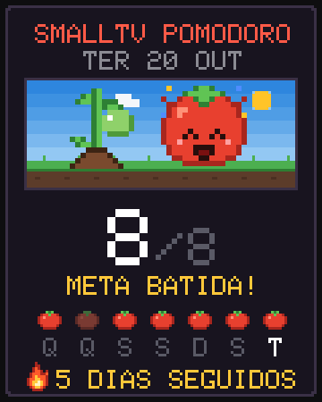
Como funciona
Bata a meta
Escolha a meta de focos do dia no painel (por exemplo, 8). Cada Pomodoro concluído conta um tomate.
Mantenha a sequência
Cada dia seguido com a meta batida soma 1 na sequência. A tela mostra uma chama com o número de dias. Pulou um dia, a sequência e a planta recomeçam.
 Faça a planta crescer
Faça a planta crescer
A planta muda com a sequência: de semente a tomate dourado em 7 dias. O relógio guarda um ano de histórico, mesmo se desligar.
A planta da sequência
Aparece no mostrador Tomate, ao lado do mascote. Telas geradas pelo simulador do projeto.
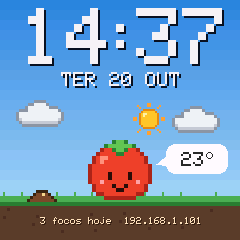
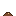
Semente0 dias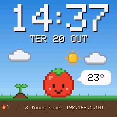
 Broto1 dia
Broto1 dia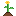
Flor2 e 3 dias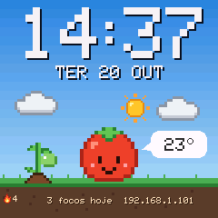
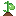
Tomate verde4 e 5 dias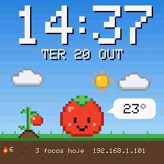
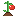
Maduro6 dias Dourado7 dias ou mais
Dourado7 dias ou maisHorta do ano
Na aba Foco do painel, cada quadradinho é um dia do último ano; vermelho é dia com a meta batida. Embaixo aparecem o total de tomates, os dias com foco e o recorde de dias seguidos.
Exemplo · 412 tomates em 96 dias · recorde de 12 dias seguidos
Conquistas
Dez conquistas em pixel art. As que você ainda não tem ficam apagadas, e cada nova aparece num aviso no painel.
 Primeiro tomateComplete um foco
Primeiro tomateComplete um foco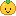
Tomate dourado7 dias seguidos na meta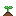
Horta começando10 tomates no total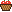
Cesta cheia100 tomates no totalCartão do dia
Toque em Compartilhar meu dia na aba Foco. O painel desenha um cartão em pixel art com a cena do Tomate, a planta da sequência, os focos de hoje, os últimos 7 dias como tomatinhos e a chama.
- No celular: abre o menu de compartilhar do celular, para mandar a imagem para quem quiser.
- No computador: baixa um PNG de 1080×1350 (retrato, 4:5).
- Quando a meta do dia é batida, o painel mostra um atalho para compartilhar.
 Para quem cria mostradores
Para quem cria mostradores
Pacotes JSON podem mostrar a sequência com {STREAK} e o recorde com {BEST}, desenhar a planta com a camada plant e esconder ou mostrar camadas com a condição streak. Formato em docs/PACOTES.md.